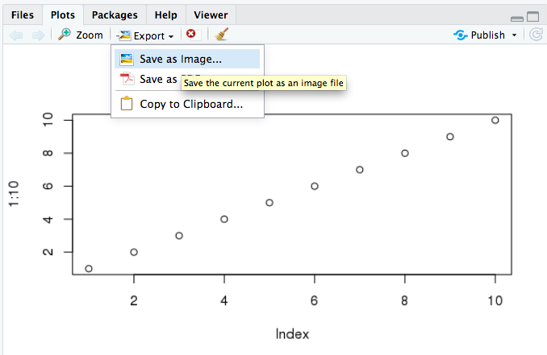
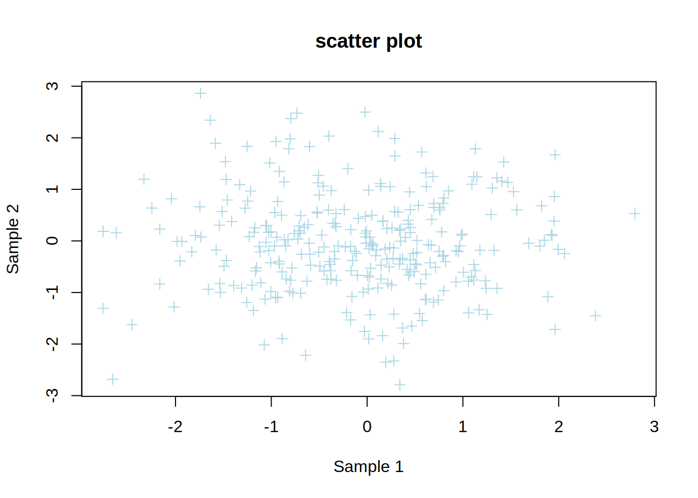

Part17 How to save plots
17.1 With R Studio

17.2 With the console
# Open the file that will contain your plot (the name is up to you)
pdf(file="myplot.pdf")
# execute the plot
plot(1:10)
# Close the file that will contain the plot
dev.off()## png
## 2Formats
R supports a variety of file formats for figures: pdf, png, jpeg, tiff, bmp, svg, ps.
They all come with their own function, for example:
## png
## 2## png
## 2The size of the output file can be changed:
# Default: 7 inches (both width and height) for svg, pdf, ps.
svg(file="myfile.svg", width=8, height=12)
plot(1:10)
dev.off()## png
## 2# Default: 480 pixels (both width and height) for jpeg, tiff, png, bmp.
png(file="myfile.png", width=500, height=600)
plot(1:10)
dev.off()## png
## 2Note that pdf is the only format that supports saving several pages:
## png
## 2Plot several figures in one page
You can output more than one plot per page using the par() function (sets graphical parameters) and the mfrow argument.
jpeg(file="myfile_multi.jpeg")
# organize the plot in 1 row and 2 columns:
# nr: number of rows
# nc: number of columns
par(mfrow=c(nr=1, nc=2))
plot(1:10)
plot(2:20)
dev.off()## png
## 2jpeg(file="myfile_multi4.jpeg")
# organize the plot in 2 rows and 2 columns
par(mfrow=c(nr=2, nc=2))
# top-left
plot(1:10)
# top-right
barplot(table(rep(c("A","B"), c(2,3))))
# bottom-left
pie(table(rep(c("A","B"), c(2,3))))
# bottom-right
hist(rnorm(2000))
dev.off()## png
## 217.3 Exercise 11: Base plots
Create the script “exercise11.R” and save it to the “Rcourse/Module3” directory: you will save all the commands of exercise 11 in that script.
Remember you can comment the code using #.
correction
17.3.1 Exercise 11a- scatter plot
1- Create the following data frame
2- Create a scatter plot showing sample1 (x-axis) vs sample2 (y-axis) of genes.
3- Change the point type and color.
4- Change x-axis and y-axis labels to “Sample 1” and “Sample 2”, respectively.
correction
5- Add a title to the plot.
correction
plot(genes$sample1,
genes$sample2,
col="lightblue",
pch=3,
xlab="Sample 1",
ylab="Sample 2",
main="scatter plot")
6- Add a vertical red line that starts at the median expression value of sample 1. Do it in two steps:
a. calculate the median expression of genes in sample 1.
b. plot a vertical line using abline().
17.3.2 Exercise 11b- bar plot + pie chart
1- Create the following vector
2- The vector describes whether a gene is up- (enriched) or down- (depleted) regulated, or not regulated (none).
Produce a barplot that displays this information: how many genes are enriched, depleted, or not regulated.

3- Color the bars of the boxplot, each in a different color (3 colors of your choice)
4- Use the argument “names.arg” in barplot() to rename the bars: Change depleted to “Down”, enriched to “Up”, none to “Not significant”
correction
5- The “las” argument allow to rotate the x-axis labels for a better visibility. Try value 2 for las: what happens?
correction
6- Create a pie chart of the same information (Enriched, Depleted, None)
Change the color of the slices, modify the labels, and add a title.

17.3.3 Exercise 11c- histogram
1- Use genes object from exercise 11a to create a histogram of the gene expression distribution of sample 1.
2- Repeat the histogram but change argument breaks to 50.
What is the difference ?
3- Color this histogram in light blue.

4- Zoom in the histogram: show only the distribution of expression values from 0 to 2 (x-axis) using the xlim argument.

5- Save the histogram in a pdf file.
correction
## png
## 2